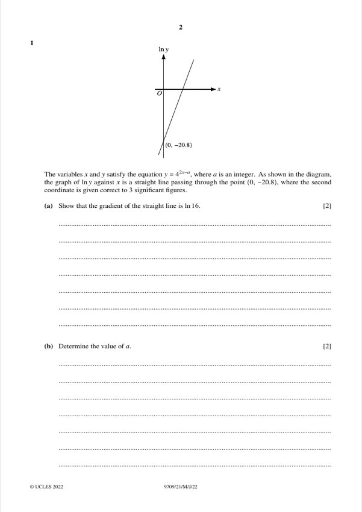
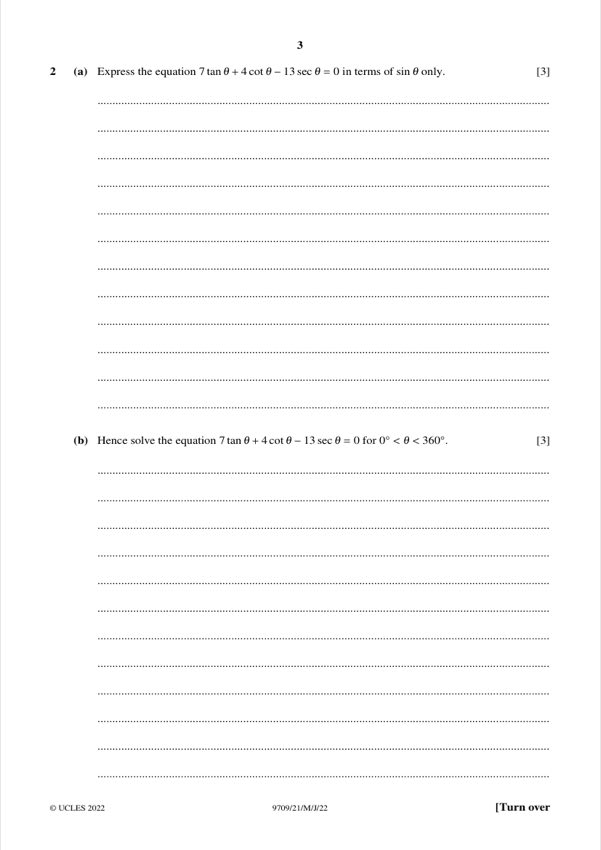
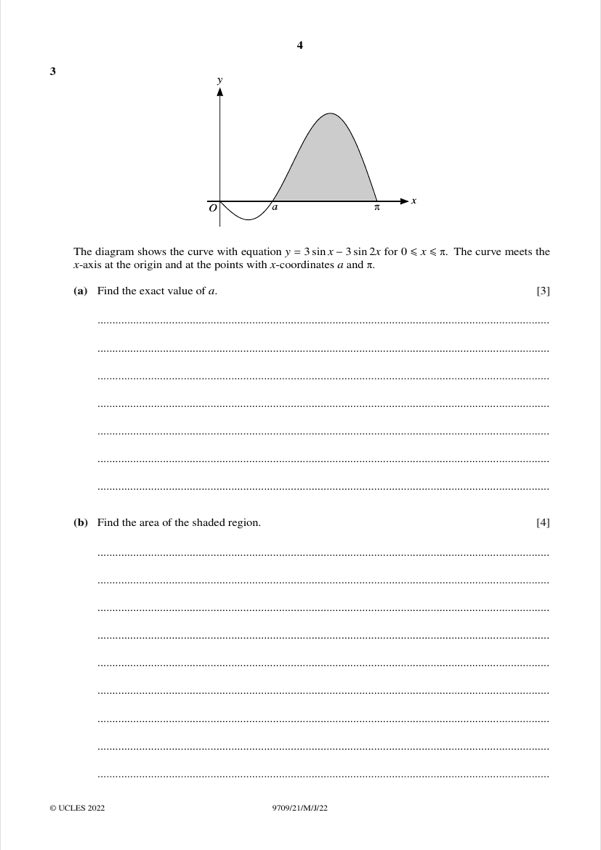
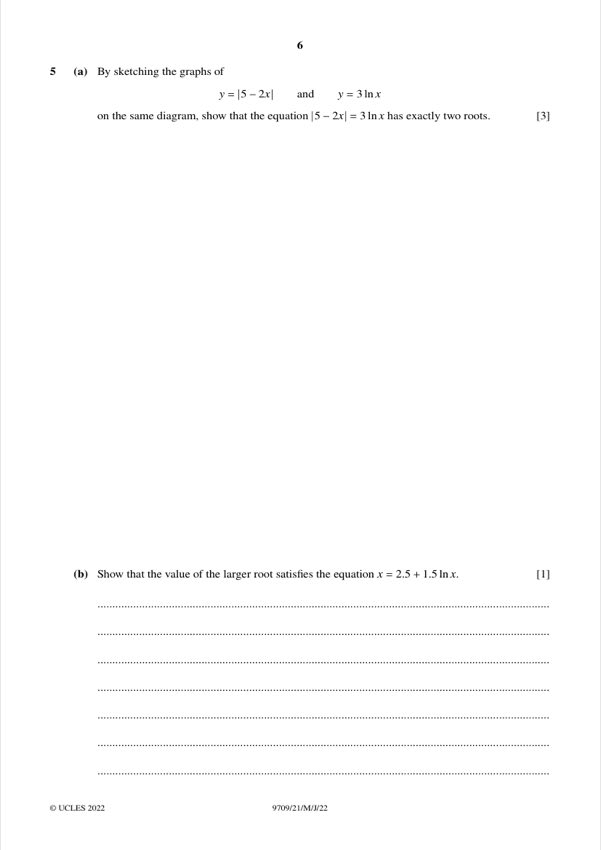
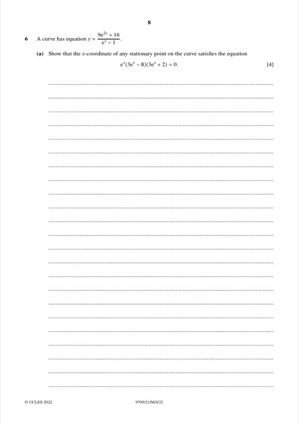
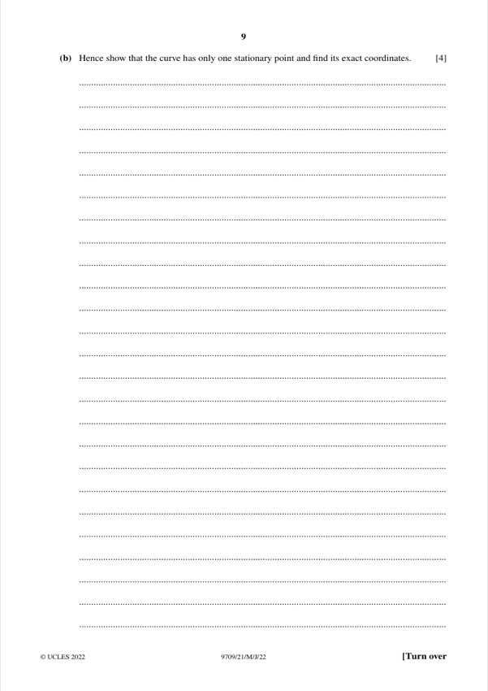
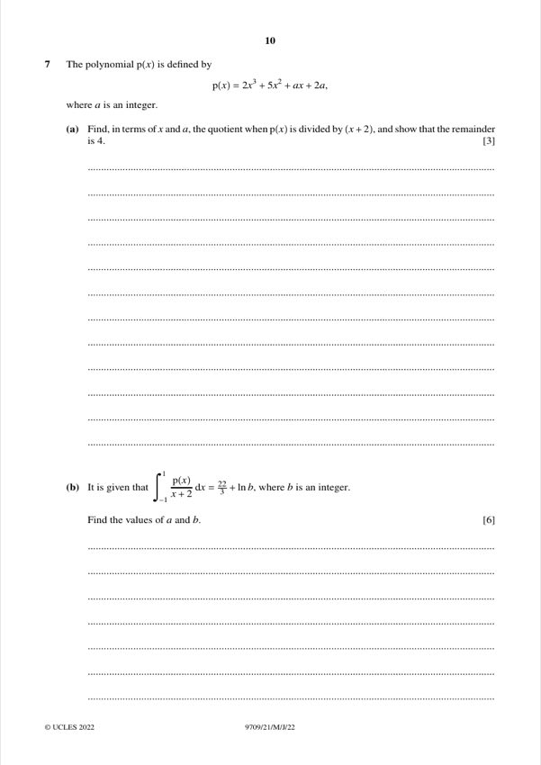

Question 1 [2 + 2]

Original paper page 2
(a) [2] y = 4^(2x − a). Show that the gradient of the straight line ln y against x is ln 16.
ln y = (2x − a) ln 4 = 2x ln 4 − a ln 4
Gradient = 2 ln 4 = ln 16
Gradient = ln 16
(b) [2] The line passes through (0, −20.8). Find a.
At x = 0: −a ln 4 = −20.8 → a = 20.8/ln 4 = 15.0
a = 15
Question 2 [3 + 3]

Original paper page 3
(a) [3] Express 7tanθ + 4cotθ − 13secθ = 0 in terms of sinθ only.
Multiply by sinθ cosθ: 7sin²θ + 4cos²θ − 13sinθ = 0
Use cos²θ = 1 − sin²θ: 3sin²θ − 13sinθ + 4 = 0
3sin²θ − 13sinθ + 4 = 0
(b) [3] Hence solve for 0° < θ < 360°.
(3sinθ − 1)(sinθ − 4) = 0 → sinθ = 1/3 (sinθ = 4 is impossible)
θ = 19.5° or θ = 180° − 19.5° = 160.5°
θ = 19.5°, 160.5°
Question 3 [3 + 4]

Original paper page 4
(a) [3] The curve y = 3sinx − 3sin2x for 0 ≤ x ≤ π meets the x-axis at x = a. Find the exact value of a.
3sinx − 6sinx cosx = 0 → 3sinx(1 − 2cosx) = 0
cosx = 1/2 → x = π/3
a = π/3
(b) [4] Find the area of the shaded region (between a and π, above the x-axis).
∫ (3sinx − 3sin2x) dx = −3cosx + (3/2)cos2x
Value at π: 3 + 3/2 = 9/2
Value at π/3: −3/2 − 3/4 = −9/4
Area = 9/2 − (−9/4) = 27/4
Area = 27/4
Question 4 [7]
The curve x²y + 2y³ = 48. Find the normal at (4, 2) in the form ax + by + c = 0 with integers a, b, c.
Differentiate: 2xy + x² dy/dx + 6y² dy/dx = 0
At (4, 2): 2(4)(2) + (16 + 24) dy/dx = 0 → dy/dx = −16/40 = −2/5
Normal gradient = 5/2: y − 2 = (5/2)(x − 4)
5x − 2y − 16 = 0
Question 5 [3 + 1 + 2 + 3]

Original paper page 6
(a) [3] Sketch y = |5 − 2x| and y = 3 ln x on the same diagram and show the equation |5 − 2x| = 3 ln x has exactly two roots.
The V-shaped graph has its vertex at (2.5, 0) on the positive x-axis.
The ln graph increases from −∞ at x = 0; it meets the V-graph once on each arm,
so there are exactly two roots (one below x = 2.5, one above).
Exactly two roots.
(b) [1] Show that the larger root satisfies x = 2.5 + 1.5 ln x.
Larger root (x > 2.5): 2x − 5 = 3 ln x → x = 2.5 + 1.5 ln x
Shown
(c) [2] Show by calculation that the larger root lies between 4.5 and 5.0.
f(x) = x − 2.5 − 1.5 ln x
f(4.5) = 2 − 1.5 ln 4.5 = −0.25 (< 0)
f(5.0) = 2.5 − 1.5 ln 5 = 0.08 (> 0)
Sign change, so the root lies between 4.5 and 5.0
Sign change confirms the root is in (4.5, 5.0)
(d) [3] Use an iterative formula x = 2.5 + 1.5 ln x to find the larger root correct to 3 s.f. (5 s.f. at each step).
x₀ = 5
x₁ = 4.9142, x₂ = 4.8882, x₃ = 4.8801, x₄ = 4.8777, x₅ = 4.8770
Larger root = 4.88
Question 6 [4 + 4]

Original paper page 8
(a) [4] The curve y = (9e²ˣ + 16)/(eˣ − 1). Show that a stationary point has x satisfying eˣ(3eˣ − 8)(3eˣ + 2) = 0.
dy/dx = [18e²ˣ(eˣ − 1) − eˣ(9e²ˣ + 16)] / (eˣ − 1)²
Numerator = 9e³ˣ − 18e²ˣ − 16eˣ = eˣ(9e²ˣ − 18eˣ − 16) = eˣ(3eˣ − 8)(3eˣ + 2)
eˣ(3eˣ − 8)(3eˣ + 2) = 0

Original paper page 9
(b) [4] Hence show there is only one stationary point and find its exact coordinates.
eˣ > 0 and 3eˣ + 2 > 0, so only 3eˣ = 8 → x = ln(8/3)
y = (9(64/9) + 16)/(8/3 − 1) = 80/(5/3) = 48
Only one stationary point: (ln(8/3), 48)
Question 7 [3 + 6]

Original paper page 10
(a) [3] p(x) = 2x³ + 5x² + ax + 2a. Find the quotient when divided by x + 2 and show the remainder is 4.
Long division: p(x) = (x + 2)(2x² + x + (a − 2)) + 4
Check: (x + 2)(2x² + x + a − 2) = 2x³ + 5x² + ax + 2a − 4, so remainder = 4
Quotient 2x² + x + a − 2, remainder 4
(b) [6] It is given that ∫₋₁¹ p(x)/(x + 2) dx = 22/3 + ln b, with b an integer. Find a and b.
p(x)/(x + 2) = 2x² + x + (a − 2) + 4/(x + 2)
Integral = [2x³/3 + x²/2 + (a − 2)x + 4ln(x + 2)] from −1 to 1
Polynomial part from −1 to 1: [2/3 + 1/2 + (a − 2)] − [−2/3 + 1/2 − (a − 2)] = 4/3 + 2a − 4
Setting equal to 22/3: 2a − 4 = 6 → a = 5
Log part: 4ln 3 − 4ln 1 = 4ln 3 = ln 81
a = 5, b = 81